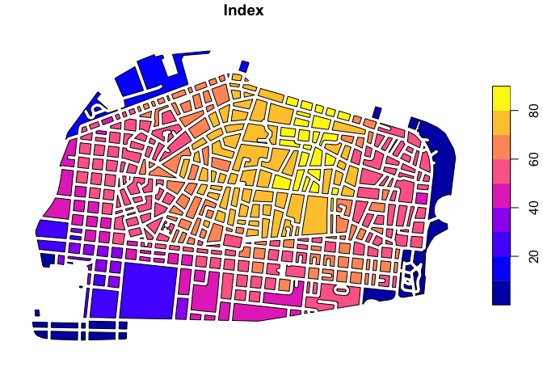

Introduction
This package was developed to assist in spatial and non-spatial prioritization. We have used these tools to support spatial planning or for investment prioritization.
Installation
You can install the package via devtools. Once that it is installed, just call the package.
Data
You can load your own spatial or tabular data, but in this example we will use one of the package data frames for Male, Maldives. The male_spatial data frame contains isochrones and isodistances for Male, Maldives for selected urban services. With the following lines we will load and plot all spatial layers in the data frame.

As can be seen from the figure, the data frame contains isochrones (in minutes) to schools, hospitals, clinics, cultural (centers), government (offices), and financial services (ATMs and banks); and isodistances (in meters) to public transit stations.
Next, we will import the configuration (config) file for Male.
data("male_config")
male_config| id | name | weight | direction | method | min | max |
|---|---|---|---|---|---|---|
| schools | Time to nearest school | 1.0 | smaller is better | observe | 5 | 30 |
| hospitals | Time to nearest hospital | 0.5 | smaller is better | observe | 5 | 30 |
| clinics | Time to nearest clinic | 0.5 | smaller is better | observe | 5 | 30 |
| cultural | Time to nearest cultural center | 1.0 | smaller is better | observe | 5 | 35 |
| government | Time to nearest government building | 1.0 | smaller is better | observe | 5 | 30 |
| transit | Time to nearest bus stop | 1.0 | smaller is better | observe | 0 | 100 |
| financial | Time to nearest ATM or bank | 1.0 | smaller is better | observe | 5 | 35 |
As can be seen from the table, the data frame contains basic information for each layer (id and name) in the first two variables (columns).
The weight column describes how relevant is a layer as compared to others. The prioritization function will compute the weighted mean to aggregate all layers in a single index. Please note that in the male_config table all layers have equal weights, except for hospitals and clinics. In this example, we will consider that both layers are part of the same category: “health facilities”, and therefore, together, they have the same weight as other categories such as “education facilities” (schools) or “mobility” (transit).
The direction variable describes whether the index should increase (or decrease) with higher (or lower) values in a layer. For example, if a user is mapping locations for a housing project, which minimize commuting time, it will be natural to expect that shorter distances to schools are better than longer distances. In this example, smaller numbers are better, or in therms of the tool the direction is “smaller better”.
The method variable describes how data in different units is transformed into a dimensionless index with values in the range 0 to 100. Options include: benchmark and observe.
The benchmark method standardizes data according to the definition of minimum and maximum references Such standards are described in the min and max variables in the table. Users can modify such columns according to their specific needs. Values below the min benchmark are treated as zeros and values above the max benchmark are treated as 100. All the rest are normalized linearly in a scale from 0 to 100.
The observe method standardizes data according to the minimum and maximum observed values. The minimum observed value in the data frame is treated as zero, the maximum is treated as 100. Again, all the rest are standardized linearly. If the observe method is selected, variables min and max will be ignored.
Spatial prioritization
Now, we will integrate a single index from all variables in the male_spatial data frame, using the observe method.
male <- prioritization(x = male_spatial, config = male_config)
plot(male["Index"])
The map highlights, in yellow, areas that have overall better accessibility to urban services. That’s it. In just 10 lines of code you have developed a spatial prioritization exercise for Male.